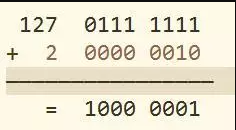
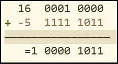

原码
最高位为符号位，0代表正数，1代表负数，非符号位为该数字绝对值的二进制表示。
如：
127的原码为0111 1111
-127的原码为1111 1111
反码
正数的反码与原码一致；
负数的反码是对原码按位取反，只是最高位(符号位)不变。
如:
127的反码为0111 1111
-127的反码为1000 0000
补码
正数的补码与原码一致；
负数的补码是该数的反码加1。
如：
127的补码为0111 1111
-127的补码为1000 0001
总结一下就是：
正数的原码、反码、补码是一致的；
负数的补码是反码加1，反码是对原码按位取反，只是最高位(符号位)不变；
计算机数字运算均是基于补码的。
为什么使用补码
如果计算机内部采用原码来表示数，那么在进行加法和减法运算的时候，需要转化为两个绝对值的加法和减法运算；
计算机既要实现加法器，又要实现减法器，代价有点大，那么可不可以只用一种类型的运算器来实现加和减的远算呢？
很容易想到的就是化减为加，举一个生活中的例子来说明这个问题：
时钟一圈是360度，当然也存在365度，但其实它和5度是一样的；
相同的道理，-30度表示逆时针旋转30度，其与顺时针旋转330度是一样的；
这里数字360表示时钟的一圈，在计算机里类似的概念叫模，它可以实现化减为加，本质上是将溢出的部分舍去而不改变结果。
易得，单字节(8位)运算的模为256=2^8。
在没有符号位的情况下，127+2=129，即：

这时，我们将最高位作为符号位，计算机数字均以补码来表示，则1000 0001的原码为减1后按位取反得1111 1111，也就是-127。
也就是说，计算机里的129即表示-127，相当于模256为一圈，顺时针的129则和逆时针127即-127是一样的。
故可以得到以下结论：
负数的补码为模减去该数的绝对值。
如-5的补码为：
-5=256-5=251=1111 1011(二进制)
同样的，临界值-128也可以表示出来：
-128=256-128=128=1000 0000(二进制)
但是正128就会溢出了，故单字节(8位)表示的数字范围为-128–127。
最后，我们来看一下，补码是如何通过模的溢出舍弃操作来完成化减为加的！
16-5=16+(-5)=11

最后再介绍一下十进制和二进制的转换方法:
正十进制转换成二进制
除二取余法
使用十进制数不断的除以2取出余数，直到商为0，将余数进行逆序排列
拆分法
将一个十进制数差分成若干个二进制权重的和，有该权重下面写1否则写0
正二进制转换成十进制
将权重为1的值进行相加
负十进制转换成二进制
1.先将十进制数的绝对值转换成二进制
2.进行按位取反(符号位也要取反)加一（按位取反后两个二进制数相加的结果全为1，再加一后后产生高位越界，得到的结果为0）
负二进制转换成为十进制
1.二进制数减一按位取反
2.转换成为十进制数在前面加负号
本博客所有文章除特别声明外，均采用 CC BY-SA 3.0协议 。转载请注明出处！